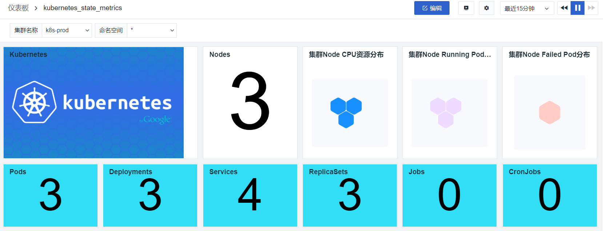
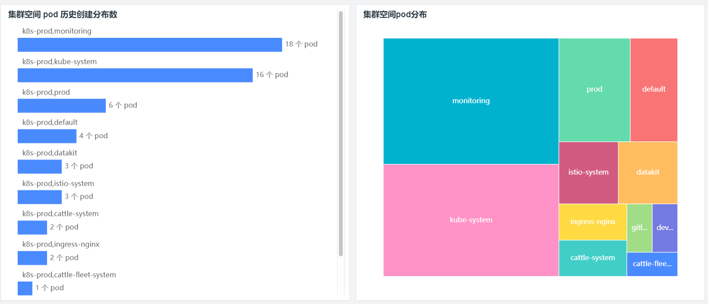
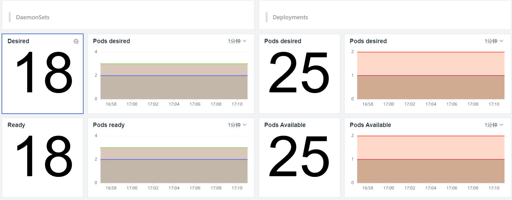
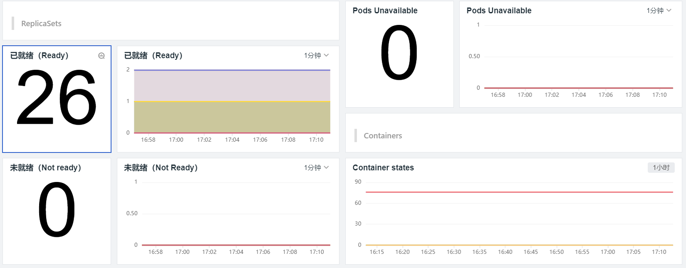
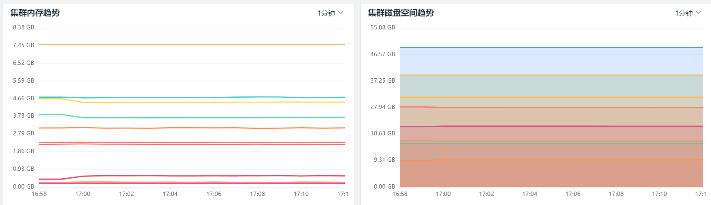
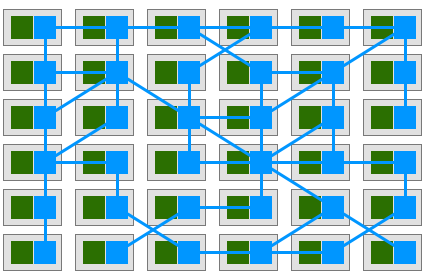
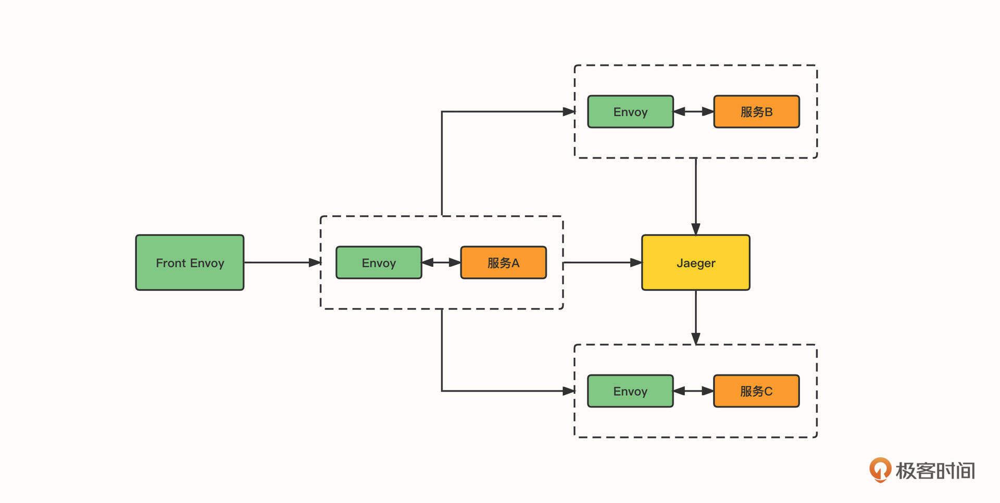
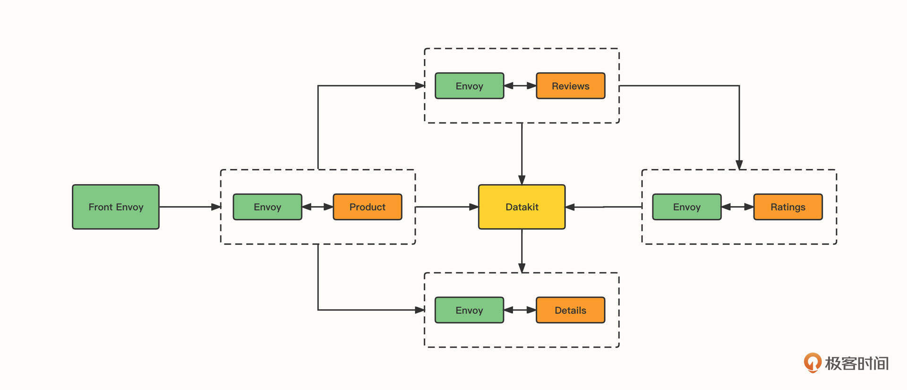

- 00 开篇词 可观测性，让开发和维护系统的你每晚都能睡个好觉！.md.html
- 01 以史鉴今：监控是如何一步步发展而来的？.md.html
- 02 基本概念：指标+日志+链路追踪=可观测性？.md.html
- 03 相互对比：可观测性和传统监控有什么区别？.md.html
- 04 OpenTelemetry：如何利用OpenTelemetry采集可观测数据？.md.html
- 05 构建可观测平台：应该购买商业产品还是自己搭建？.md.html
- 06 团队合作：不同团队如何高效共建可观测性？.md.html
- 07 软件开发：如何利用可观测性进行驱动？.md.html
- 08 建立 SLO：如何为系统可靠性的量化提供依据？.md.html
- 09 跟踪 SLO：如何基于错误预算采取行动？.md.html
- 10 实战 1：从 0 到 1 建立系统应用的可观测性.md.html
- 11 实战 2：基于可观测性数据进行问题分析和根因定位.md.html
- 12 实战 3：构建基于 Kubernetes 的系统可观测性.md.html
- 13 实战 4：建立软件持续集成和发布的可观测性.md.html
- 14 文化建设：如何构建可观测性的文化和框架_.md.html
- 15 展望未来：可观测性在未来的发展趋势是什么？.md.html
- 结束语 在实践中，用科学的方法分析和解决问题.md.html
- 捐赠
12 实战 3：构建基于 Kubernetes 的系统可观测性
你好，我是翁一磊。
在第 10 讲中，我们一起构建了微服务系统的可观测性，我使用的是一个在主机中部署应用的例子。而如今，容器技术已经席卷了基础设施世界，它非常适合快速扩展或频繁发布的微服务架构和环境，容器近年来的使用量也在迅速增加。
但是采用 Docker、containerd 或其他容器运行时会让编排的复杂性显著增加，这就到了 Kubernetes 发挥作用的时候了。这节课，我们就来看看如何构建基于 Kubernetes 的系统和应用的可观测性。
受到篇幅限制，Kubernetes 的基础概念和运行、管理机制我就不多做介绍了。极客时间也有关于 Kubernetes 的优秀课程，如果有需要，你可以系统地去学习一下。
Kubernetes 对可观测性意味着什么？
Kubernetes 的出现，要求我们重新思考和定位监控的策略，特别是如果你习惯于监控传统的、长期存在的主机，例如虚拟机或物理机。就像容器彻底改变了我们对在虚拟机上运行服务的看法一样，Kubernetes 也改变了我们与容器化应用程序交互的方式。
在传统的、以主机为中心的基础架构中，我们只有两个主要层面需要监控：主机和应用程序。容器的出现在主机和应用程序之间添加了一个新的抽象层；而现在，编排容器的 Kubernetes 也需要进行另外的监控。这意味着我们现在需要监控 4 个不同的层面，每个组件都有它的特殊性和侧重点：
- 主机，主要是操作系统各维度的监控；
- 容器，即使我们不知道它们在哪里运行，但也需要相关的指标来了解像 Pod 和 Container 的运行和性能状态；
- Kubernetes 集群本身，包括 Kubernetes 相关的组件；
- 容器化的应用程序，即应用性能监测的维度。
在容器之前，标签对于监控基础设施来说很重要，它让我们能够对主机进行分组，并从不同的维度对指标进行聚合。而容器环境则带来了更多需要跟踪的对象，它们的生命周期甚至更短。
这时候，为了让你收集的数据尽可能地有用，你应该设法使用标签标记你所管理的 Pod，以便查看应用程序和基础设施的任何方面，比如说环境（开发、测试、预生产、生产等等）、应用程序、版本、以及项目和团队等等。这些标签对于 Kubernetes 的监测是非常重要的，有了它们，你才能够跨 Kubernetes 架构的不同层面和组件来进行数据的聚合、关联和分析。
从所有容器和 Pod 中收集指标和事件，然后监控 Kubernetes 基础设施的运行状况至关重要。但是，要了解最终用户使用产品的体验，你还需要监控实际在这些 Pod 中运行的应用程序。由于 Kubernetes 会自动安排你的工作负载，所以要想在每次启动或重启容器时手动配置检查，然后从这些应用程序收集监控数据变得不再现实了。
那我们应该如何构建基于 Kubernetes 的应用程序可观测性呢？
采集和分析 Kubernetes 各维度的观测数据
建立Kubernetes 系统的可观测性也包括了多个维度，像指标、日志、链路追踪、前端用户访问等等。你可能已经使用过开源工具，例如 Prometheus、ELK、Jaeger ……主要的问题还是不同的数据需要不同的工具，难以进行统一和联合，在分析问题时会影响效率。那在这一节中，我还是以观测云为例，带你看一些具体的案例。
环境的准备比较简单，你可以创建虚拟机，部署 Kubernetes 集群。当然，如果只是想做个实操演练，用单机也是可以的。
如果你已经注册了观测云账号，在控制台的“集成”菜单，选择 Datakit -> Kubernetes 获取最新的 datakit.yaml 文件，然后把 datakit.yaml 文件中的 ENV_DATAWAY 环境变量值中的 token 替换为你实际的工作空间 token，你可以在“管理”菜单中的基本设置中查看它。
完成之后，你通过 DaemonSet 的方式进行部署，也可以通过 Helm 的方式进行部署。
安装完成之后，不需要额外配置，DataKit 默认已开启一些系统指标的采集。如果要修改这些采集器的默认配置，可以通过 Configmap 方式挂载单独的 conf 来配置。部分采集器可以直接通过环境变量的方式来调整。详细的配置可以参考这里。
指标
让我们首先来看一下监控指标。
观测云能够监测 Kubernetes 中各类资源的运行状态和服务能力，包括 Kubernetes Clusters、Deployments、Replica Sets、Services、Nodes 等。
Kubernetes 生态系统包括两个互补的附加组件，它们可以从集群中聚合和报告有价值的监控数据。这两个组件分别是 Metrics Server 和 kube-state-metrics。
- Metrics Server 从每个节点上的 kubelet 收集资源使用统计信息，并通过 Metrics API 提供聚合指标。Metrics Server 仅将近乎实时的指标存储在内存中，因此它主要用于抽查 CPU 或内存使用情况，或提供给一个用于在较长时间跨度内保留数据的全功能监控服务，由它来进行定期查询。
- kube-state-metrics 是另一个服务，它可以让集群状态信息更加容易被获取。 Metrics Server 公开 Pod 和节点的资源使用指标，而 kube-state-metrics 监听控制平面 API 服务器以便获取有关 Kubernetes 对象（节点、Pod、部署等）以及资源的整体状态的数据，还有这些对象的限制和分配。接着它会根据这些通过 Metrics API 获得的数据生成指标。
而观测云通过 Metrics Server 获取和展示 Kubernetes 的性能指标，这包括 Pod 数量、Deployment 数量、Job 数量、Endpoint 数量、Service 数量、CPU、内存、Pod 分布等；通过 kube-state-metrics 获取和展示 Pod 相关的数据指标，例如 Pod desired、Pods ready、Pods Available、Pod Unavailable等。通过灵活的自定义能力，你可以通过观测云构建有关 Kubernetes 集群、节点、Pod 等各维度的视图。





日志
再来看看日志。
对于企业的应用系统来说，日志的地位非常重要，特别是在 Kubernetes 环境，日志采集就更复杂了。因此 DataKit 对日志采集提供了灵活的支持。这里我也借助 DataKit，来介绍一下观测云在日志采集方面的不同之处，详细的步骤就不在文稿中赘述了，你可以直接参考这里的文档。
- Stdout 日志采集
DataKit 可以采集输出到 stdout 的容器日志，使用 datakit.yaml 部署 DataKit 后，就会默认开启 container 采集器。此时会在 DataKit 容器中生成 /usr/local/datakit/conf.d/container/container.conf 配置文件，默认配置是采集除了 pubrepo.jiagouyun.com/datakit/logfwd 开头的镜像外的所有 stdout 日志。
当然，如果你想进一步过滤日志采集对象，可以参考上面给出的文档链接，进行进一步配置。
- logfwd 采集
为了便于在 Kubernetes Pod 中采集应用容器的日志，观测云提供了一个轻量的日志采集客户端。这是一种使用 Sidecar 模式的日志采集方式， 即利用同一个 Pod 内的容器共享存储，让 logfwd 以 Sidecar 的模式读取业务容器的日志文件，然后发送给 DataKit。
使用这种方式，DataKit 可以自动追加一些 Pod 的 Kubernetes 属性字段，如 Pod 名称以及 Kubernetes 命名空间等信息。同时，开发者可以不用修改日志的配置，依然将日志输出到磁盘，甚至可以不用外挂存储，logfwd 就能直接从 Pod 自身存储捞取日志推送出来（但日志需做好自动切割设置，避免将 Pod 存储打满）。
- Socket 远程采集
另一种方式是开发者直接将应用日志推送到 DataKit 指定的服务上，比如 Java 的 log4j 以及 Python 原生的 SocketHandler 都支持将日志发送给远端服务。这种形式的特点是日志会直接发送给 DataKit，中间无需落盘，节约了数据存储空间。
- 日志文件采集
还有一种方式是直接进行文件采集。Linux 主机安装的 DataKit 采集该主机上的日志的方式是，复制 logging.conf 文件，然后再修改 logging.conf 文件中的 logfiles 的值为日志的绝对路径。在 Kubernetes 环境下，需要先把 Pod 生成的日志目录 /data/app/logs/demo-system 挂载到宿主机上 /var/log/k8s/demo-system，再使用 Daemonset 部署 DataKit ，挂载 /var/log/k8s/demo-system 目录，这样 Datakit 就能采集到宿主机上的 /rootfs/var/log/k8s/demo-system/info.log 日志文件了。
链路追踪和用户访问数据
APM 链路追踪和 RUM 前端用户访问的数据都是从应用的角度来收集的，在 Kubernetes 的环境中，采集数据的原理和在主机环境中类似，这个我们在第 10 讲也提到过。当然，在 Kubernetes 环境中，配置步骤会有些不一样。
APM 这块总体来说会有这么几步：
- 开通 ddtrace 探针，链路数据增加 node_ip 标签；
- 增加 JAVA_OPTS 环境变量，采集 JVM 和应用链路追踪的数据；
- 初始化容器使用 ddtrace-agent-sidecar，把 dd-java-agent.jar 以共享存储的方式提供给system容器使用。
RUM 这块，Datakit 要开启 RUM 采集器是需要配置环境变量：
- name: ENV_DEFAULT_ENABLED_INPUTS
value: rum
用户访问监测使用的 Datakit 地址必须是网络能够访问到的，同时你需要修改 Datakit 的配置文件 /usr/local/datakit/conf.d/datakit.conf 的 listen=“0.0.0.0:9529”。在实际生产环境中，建议将 RUM 使用的 Datakit 部署到 Kubernetes 集群的外部。
如果你想进一步地进行实验，可以直接参考这里的文档。
服务网格
在我们使用 Kubernetes 平台构建容器化的应用过程中，微服务在软件应用中迅速普及，大型应用往往被分解成多个微服务。虽然每个微服务能通过容器化在单独的容器中运行，但是服务间通信的网络拓扑仍然非常复杂。
既然微服务之间网络通信非常重要，那我们就非常需要这样的基础组件了。它能够实现多个服务代理，确保受控的服务到服务之间的通信通道安全和健壮。
这就不得不提到服务网格（Service Mesh）了。服务网格描述的是组成这些应用程序的微服务网络以及它们之间的交互。单个服务调用表现为 Sidecar，即我们所说的边车模式，如果有大量的服务，就会表现出网格。
在下面这张图中，绿色方格代表应用微服务，蓝色方格代表 Sidecar，线条表示服务之间的调用关系，Sidecar 之间的连接会形成一个网络。

Istio 是一个开源服务网格，它透明地分层到现有的分布式应用程序上，提供了对整个服务网格的行为洞察和操作控制的能力，它还能提供一个完整的，满足微服务应用各种需求的解决方案。
Istio 核心组件主要包括数据平面和控制平面两部分。
- 数据平面由一组智能代理（Envoy）组成，Envoy 被部署为 sidecar ，微服务之间 Sidecar 的通信是通过策略控制和遥测收集（Mixer）实现的。
- 控制平面负责管理和配置代理，以此路由流量。包括下面几个组件。
- Citadel，通过内置身份和凭证管理来提供强大的服务间和最终用户身份验证。
- Pilot 的主要作用是为 Envoy sidecar 提供服务发现、智能路由（例如 A/B 测试、金丝雀部署等）、流量管理和错误处理（超时、重试和熔断）功能。
- Galley 是 Istio 配置验证、获取、处理和分发的组件。
Envoy 原生支持 Jaeger，链路追踪所需 x-b3 开头的 Header （包括 x-b3-traceid， x-b3-spanid, x-b3-parentspanid， x-b3-sampled， x-b3-flags）和 x-request-id 在不同的服务之间由业务逻辑进行传递，并由 Envoy 上报给 Jaeger，最终 Jaeger 生成完整的追踪信息。
在 Istio 中，Envoy 和 Jaeger 的关系如下。

在这张图中，Front Envoy 指的是第一个接收到请求的 Envoy Sidecar，它会负责创建 Root Span 并追加到请求 Header 内。当请求到达不同的服务时，Envoy Sidecar 会将追踪信息进行上报。Envoy 链路追踪原生支持 Jaeger， 也支持集成外部追踪服务，例如 Zipkin。Istio 链路追踪提供全局配置 zipkinAddress，Envoy的上报地址通过 proxy_init 的 –zipkinAddress 参数传入。
如果你想对服务网格进行实验，给你推荐一个叫做 BookInfo 的应用程序。它由四个单独的微服务构成，这个应用模仿在线书店的一个分类，显示一本书的信息。页面上会显示一本书的描述，书籍的细节（ISBN、页数等），以及关于这本书的评论。
Bookinfo 应用程序分为四个单独的微服务：
- productpage (python) 微服务调用 details 和 reviews 微服务来填充页面；
- details (ruby) 微服务包含图书的详细信息；
- reviews (java) 微服务包含书评，它还会调用 ratings 微服务；
- ratings (node js) 微服务包含书的排名信息。
我们只需要把 Istio 的 ConfigMap 中的 zipkin.address 修改为 DataKit 地址，同时在 DataKit 中开启 Zipkin 采集器，就能把 Bookinfo 的链路数据推送到 DataKit 了。

如果你想进一步地实验，可以直接参考这里的文档。
小结
好了，这节课就讲到这里。这节课，我们主要介绍了怎样收集基于 Kubernetes 的系统和应用的各维度的观测数据，包括指标、日志、链路追踪、前端用户访问等。通过 Kubernetes 构建应用带来了很多便利性以及可扩展性，但随着服务之间的依赖越来越复杂，构建可观测性变得更加有必要。
在采集好各方面的可观测性数据之后，你可以参考上节课的内容进一步查看和分析数据。在下一讲，我们会一起学习如何构建软件持续集成和发布的可观测性。
思考题
在这节课的最后，留给你一道思考题。
在建立 Kubernetes 系统和应用的可观测方面，你有没有实际的工作经验和体会？欢迎你在留言区留言进行分享和讨论。我们下节课见！
© 2019 - 2023 Liangliang Lee. Powered by gin and hexo-theme-book.